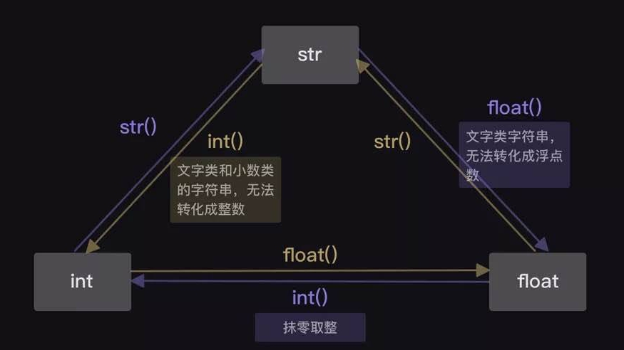

int, float, string
整数，浮点数，字符串
----------------------------------------
字符串（string）
用引号括起来的文本
>>> Chinese = '镜像世界'
>>> English = "mirror world"
>>> number = "666"
>>> symbol = '''科A!@'''
>>> mixture = '镜像世界mirror world666科A!@'
>>> print(Chinese)
镜像世界
>>> print(English)
mirror world
>>> print(number)
666
>>> print(symbol)
科A!@
>>> print(mixture)
镜像世界mirror world666科A!@
-------------------------------------------
整数（int）
正整数、负整数和零的统称，是没有小数点的数字
-------------------------------------------
浮点数（float）
带小数点的数字，运算结果存在误差
>>> print(0.55+0.3)
0.8500000000000001 #不是0.85
————————————————————
*四则运算*
运算优先级(类似数学的运算优先级)
>>> print(499*561+10620-365)
290194
>>> print((5025-525)/100+18*17)
351.0
————————————————————
*字符串的拼接*
方法:用'+'号将数据进行拼接
目的:数据整合
————————————————————
*数据类型的查询--type()函数*
作用:查询数据类型
示例：print(type(''))
>>> number = 153
>>> print(type(number))
<class 'int'>
数据转换
转换数据类型的函数
str()、 int()和float()

整数转换字符串类型
>>> magic = '水仙花数'
>>> action = '是'
>>> unit = '个'
>>> expression = '＝1x1x1+5x5x5+3x3x3'
>>> number = 153
两种写法：
>>> print(str(number)+expression+action+unit+magic)
153＝1x1x1+5x5x5+3x3x3是个水仙花数
>>> print('153'+expression+action+unit+magic)
153＝1x1x1+5x5x5+3x3x3是个水仙花数
————————————————————————
int()函数
#只有符合整数规范的字符串类数据，才能被int()强制转换
>>> number1 = '6'
>>> number2 = '1'
>>> print(int(number1)+int(number2))
7
print(int('3.8')) #另外小数形式的字符串也不能强制转换
运行后显示结果：ValueError：invalid literal for int() with base 10: '3.8'
但浮点数是可以被int()函数强制转换
print(int(3.8)) #int()函数会做取整处理，小数位直接抹零
3
——————————————————
float()函数
>>> height = 188.0
>>> weight = 180.0
>>> age = '89'
>>> print(float(height))
188.0
>>> print(float(weight))
180.0
>>> print(float(age))
89.0
*数据多次转换*
>>> slogan = '脸黑怪我咯'
>>> number = '7.8'
>>> unit = '张'
>>> sentence = '蓝票一个SSR都没有'
>>> print(slogan+str(int(float(number)))+unit+sentence)
脸黑怪我咯7张蓝票一个SSR都没有